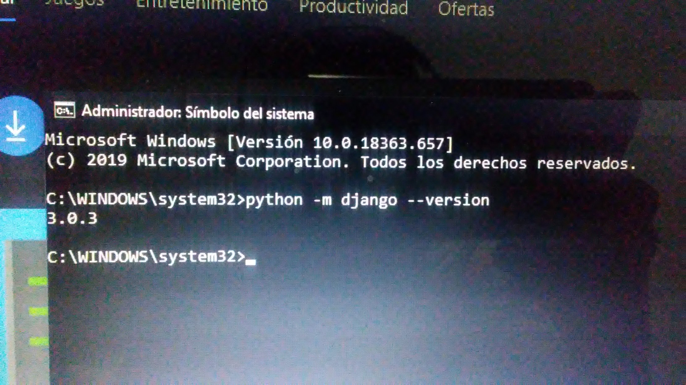
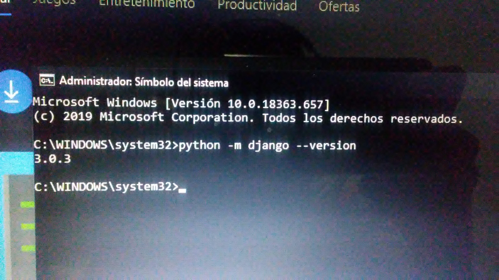

Instalación de Python en los sistemas operativos Windows 10 y Debian 8
Cuenta con estructuras de datos eficientes y de alto nivel y un enfoque simple pero efectivo a la programación orientada a objetos. La elegante sintaxis de Python y su tipado dinámico, junto con su naturaleza interpretada, hacen de éste un lenguaje ideal para scripting y desarrollo rápido de aplicaciones en diversas áreas y sobre la mayoría de las plataformas.
Ir Pagina para descargar Python 3.8.1Instalar Python y Django en Windows 10
Para instalar Python existen varias opciones la que usaremos sera descargando
desde la pagina oficial.
Se inicia el ejecutable y elegimos la opcion personalizada donde damos siguiente
hasta cambiar la ubicación de donde se instalara, la cual de preferencia es en la
raiz y creando una carpeta para este.
lo que sigue es entrar a variables de entorno buscando en el menu de windows,
damos doble clic en path y agregamos la carpeta que creamos para python y la dirección
de la carpeta de script de python.
Entramos a la consola para escribir 'pip install django' y esperamos la instalacción.
lo siguiente es escribir en la consola python -m django --version para comprobar que
esta instalado correctamente.

 

Instalar Django en Debian 8
En esta version de Debian existe una version de pyhton 2 y una de version 3.
Para actualizar la version de python lo primero que debemos es escribir en el
comando en modo super usuario: cd /opt y luego
wget https://www.python.org/ftp/python/3.8.1/Python-3.8.1.tgz
luego ejecutamos tar xzf Python-3.8.1.tgz
Lo siguiente es compilar el codigo fuente entramos a la carpeta extraida
cd Python-3.8.1 y luego escribimos
sudo ./configure --enable-optimizations
sudo make altinstall
Ahora se creara un entorno virtual para instalar Django asi que entramos en la
terminal una dirección donde se desea crear el entorno virtual, para crear el
entorno virtual escribimos python3.8 -m venv [nombre de entorno que quieras darle]
lo siguiente es pip install django y listo esta instalado.